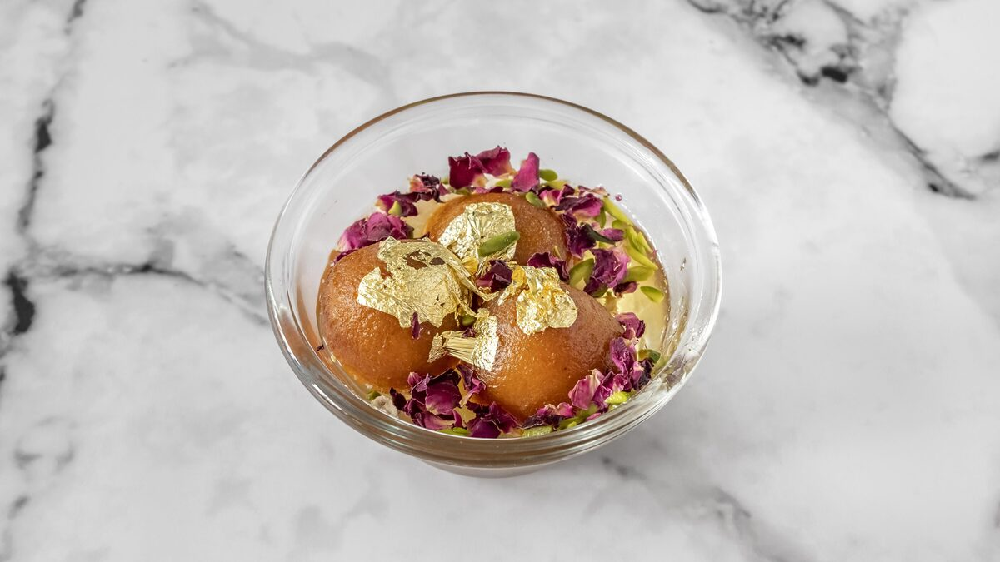

Her Story
No culinary school.
A Delhi kitchen instead.
I learned to cook where Indian food actually lives — at home. Watching my mother and my grandmother, in a kitchen where recipes were never written down, only handed down.
And not just one home. I ate at the tables of friends and family across India — noticing how the same dal changes from state to state, how each household preps its spices, what different palates reach for. That noticing was my training.
When we moved to England, I cooked the way I always had: masala built from scratch for every batch, no shortcuts, no restaurant tricks. Word spread from one Brighton kitchen — students missing home, parents too tired to cook, families who wanted dinner to taste like somebody's mother made it. Somebody's mother did.
That kitchen became Saakshi's Kitchen — my name on the door, my family's standard in every tray. And in 2026 came Yum! Curries, where as Recipe Director I take the food of Indian homes into takeaway without losing its soul.
Today, meals I've curated are eaten in thousands of British homes — family-first food, made for the everyday. Not a treat night, not a takeaway craving: Monday dinner, done the way home does it.